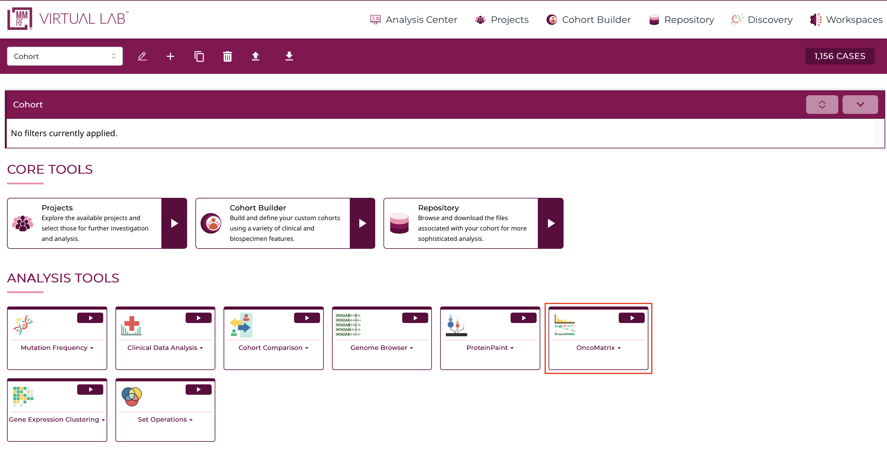
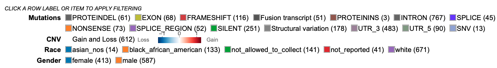

Oncomatrix¶
Introduction¶
The OncoMatrix tool is a web-based tool for visualizing coding mutations such as Simple Somatic Mutations (SSM) and Copy Number Variations (CNV) from the MMRF Virtual Lab (VLab).
Accessing the Matrix Chart¶
At the Analysis Center, click on the "OncoMatrix" card to launch the app.

{kind=link}
There are three main panels in the OncoMatrix tool: control panel, matrix plot, and legend panel.
{kind=link}
Each of the features and functionalities are described in detail in the following sections.
Control Panel¶
The control panel has various functionalities with which users can change or modify the appearance of the matrix. The control panel provides flexibility and a wide range of options to maximize user control.
{kind=link}
Control Panel:
- Cases: Choose how to sort the cases, specify the maximum number of cases to display, group cases according to selected variables, and adjust the visible characters of the case labels
- Genes: Modify how cases are represented for each gene (Absolute, Percent, or None), row group and label lengths, rendering style, how genes are sorted, the maximum number of genes displayed, and the existing gene set
- Edit Group: Displays a panel of currently selected genes, which can be modified by clicking on a gene to remove it from the gene set, searching for a particular gene to add, loading top variably expressed genes, or loading a pre-defined gene set provided by the MSigDB database
- Create Group: Create a new gene set by searching for a particular gene, loading top mutated genes, or loading a pre-defined gene set provided by the MSigDB database
- Mutation: Show or hide specific mutation consequences
- CNV: Show or hide specific CNVs
- Variables: Search and select variables to add to the bottom of the matrix
- Cell Layout: Modify the format of the cells by changing colors, cell dimensions and spacing, and label formatting
- Legend Layout: Alter the legend by changing the font size, dimensions and spacing, and other formatting preferences
- Download: Download the matrix in svg format
- Zoom: Adjust the zoom level by using the up and down arrows on the input box, entering a number, or using the sliding scale to view the case labels.
Matrix plot¶
The OncoMatrix plot displays the genes along the left panel with each column representing a case.
Matrix cells¶
Each column in the matrix represents a case. Hovering over a cell will display the corresponding case submitter_id, gene name, copy number information, and mutation class if any are provided. Clicking on a cell also gives users the option to launch the Disco Plot.
{kind=link}
The Disco Plot is a circular plot that shows all the mutations and CNVs for a given case. The Disco Plot also displays the legend for the mutation class and the CNV.
{kind=link}
Automatic Zoom¶
To perform an automatic zoom, users can click on and hold a case column then drag the mouse from left to right to form a zoom boundary. From the pop-up window, users can choose to zoom in to the cases, list all highlighted cases, or create a cohort of the selected cases.
{kind=link}
The individual case columns are now visible with a demarcated boundary. Above the cases, a slider has been provided for moving from one view to another to accommodate all cases.
{kind=link}
Genes¶
In the panel of genes on the left, users can hover over a gene to view the number of mutated samples, a breakdown of consequence type, and copy number gain and loss counts.
{kind=link}
Clicking on a gene opens a pop-up window where users can rename it, launch the ProteinPaint Lollipop plot, display the Gene Summary Page, and replace or remove the gene. The lollipop plot displays all cases across the Multiple Myeloma Research Foundation Virtual Lab (MMRF VLab) affected by SSMs in the selected gene.
{kind=link}
Variables¶
Any variables added to the matrix appear at the bottom of the plot. Users can hover over a cell in a variable row to display the case submitter_id and their value for the given variable.
{kind=link}
Clicking on a variable allows users to rename it, edit it by excluding categories, replace it with a different variable, or remove it entirely.
{kind=link}
Drag and drop genes and variables¶
By default, the genes in the matrix are sorted in descending order according to which genes have the highest number of rendered cases. Users can override this by dragging and dropping gene and variable row labels to sort the rows manually.
Legend Panel¶
Below the matrix, the legend displays color coding for mutation classes, CNV, as well as each variable that is selected to appear in the plot.
CNV allows users to hide CNV.
{kind=link}
{kind=link}
Additionally, users can click on a variable's category to hide a specific group, only show a specific group, or show all groups for the selected variable.
{kind=link}
Features¶
The following features are viewable once the matrix application is loaded.
There are three main panels as outlined in the figure below i.e., the Control panel, Matrix chart, and the Legend panel.
Each of the features and functionalities are described in detail in the following sections.
Matrix plot¶
Hovering on sample columns¶
Each column in the matrix represents a sample. Hover over sample cells/columns to display information about the sample such as case id, gene name, Copy number information and mutation/mutation class (if any provided) as shown.
{kind=link}
Drag to zoom¶
A user may click a row label and drag it while keeping the mouse button down, to sort the rows manually. Click and hold on a column of sample and drag the mouse from left to right to form a zoom boundary as shown in the image and leave the mouse.
{kind=link}
This allows for an automatic zoom as shown. The individual sample columns are now visible with a well demarcated boundary. Above the samples, a slider (as shown in gray) has been provided for moving from one view to another to accommodate all cases.

Additionally, to have a finer control on the zoom the user may follow the steps outlined in the section - Zooming
Clicking on sample columns¶
In the same zoomed in view as shown above, click on any sample column for KRAS. This displays a clickable button Disco plot as shown.
{kind=link}
Click on the disco plot button to display a circular plot that shows all the mutations for a given sample as shown.
{kind=link}
The disco plot can also be accessed by following steps outlined in the section - Disco Plot
Clicking on gene/variable labels¶
Click on KRAS gene label to display the following options.
{kind=link}
The first row in the options highlighted by a red box as shown in the image above allows the user to sort rows and move rows up and down (please note that rows can also be moved by dragging and dropping as outlined in section Drag and Drop Gene Label/Variable variable). Every time a sorting icon is clicked the chart will update and reload.
Click the first arrow as shown by clicking the gene label KRAS. This will sort the samples against the gene at the top left corner which is KRAS in this example.
{kind=link}
Next, click on the left arrow as shown. This allows for sorting samples against the gene.
{kind=link}
Now click the down arrow as shown. The row with KRAS cases will move below NRAS.
{kind=link}
Click the gene label KRAS and click the up arrow as shown.
{kind=link}
The row containing KRAS cases now moves back up in position 1 above NRAS.
Control Panel¶
The control panel as shown has various functionalities with which users can change or modify the appearance of the matrix. The control panel provides flexibility and a wide range of options to maximize user control.
Drag and Drop Gene Label/Variable¶
The genes on the matrix are sorted by default on the number of cases with the gene having the highest number of cases at the top of the matrix. A user may choose to override this by dragging a gene label and dropping it above or below any other gene in order to customize their own gene groupings.
Select PTEN gene label and drag it below the gene labeled EGFR as shown. When dragging a gene label, hover over EGFR such that the EGFR gene label would appear blue.
{kind=link}
When the EGFR gene label appears blue, then drop the PTEN gene label row. The display updates to show PTEN below EGFR as shown below.
{kind=link}
Cases¶
Within the control panel, the first button displays the number of cases that are shown as columns of the matrix. The default view is as shown.
{kind=link}
Click on the 10000 Cases button to display the following options as shown.
- Maximum #cases
- Case Label Character Limit
- Group Cases by
- Sort Case Priority
{kind=link}
These sections are described below.
Maximum #cases¶
There is a default number of samples that are shown in the matrix chart. Users can choose to increase or decrease the number of samples. This allows the chart to re-render and display the number of columns based on the user's selection. Figure below shows increased cases to 10000. Please note that any high arbitrary number can be selected but the chart will only show the maximum cases that the MMRF VLab has.
The chart will reload with new cases added.
Case Label Character Limit¶
This option allows users to increase or decrease the length of the case label. The default number is 32 characters. The chart will reload with new cases added.
Group cases by¶
This option allows users to group cases by different variables from the MMRF Virtual Lab dictionary. Click on the + icon shown in blue to display different variables. Users may also search for a variable from the search bar provided in the menu as shown by Search Variables.
{kind=link}
Sort Case Priority¶
The default sort setting sorts the cases 'by presence' under 'Basic' sort settings.
Click the second option by consequence to change the sorting. The matrix reloads with the new sorting as shown below.
{kind=link}
To perform an advanced sorting, click 'Advanced' on the 'Sort Case Priority' menu as shown below.
{kind=link}
Now user has the option to sort the cases by each selected row, gene mutation, dictionary variable or alphabetically by name. Details of each sort option are provided.
Genes¶
The gene panel as shown below has several options as listed below for modifying the genes visible on the plot as well as their appearance/style.
- Genomic Alterations Gene Set
- Display Case Counts for Gene
- Genomic Alterations Rendering
- Sort Genes
- Maximum # Genes
{kind=link}
Display Case Counts for Gene¶
This option allows change in the number of cases that is represented in parentheses next to the gene variable label as shown below. By default, the number of cases for each gene is an Absolute.
Click on the button 50 Genes to display the menu and select Percent
This shows the case counts as a percentage of the absolute values as shown.
{kind=link}
User has the option to hide the display of case counts. Click Genes button again and select None for Display Case Counts for Gene as shown below
{kind=link}
This hides all the case counts as shown.
{kind=link}
Genomic Alterations Rendering¶
The style of rendering for the sample cells/columns is an Oncoprint style by default. Click on Stacked option via 50 Genes button as shown below.
{kind=link}
{kind=link}
To view the rendering in an oncoprint style, click Oncoprint button on the control panel. This updates the rendering as shown.
Sort Genes¶
The default sorting option for genes is By Sample Count. This means the genes are sorted by the number of samples from increasing to decreasing order. Click 50 Genes button on the control panel, and select By Input Data Order under the Sort Genes as shown below.
{kind=link}
The genes will now sort according to the order that is stored in the dataset and queried. However, please note that the sorting order can be overridden by the users choice as described in the section - Drag and Drop Gene Label/Variable.
Maximum # Genes¶
The number of genes to display on the matrix plot can be modified by the input option as shown below. Click 50 Genes button and change input number for Maximum # Genes to 100.
{kind=link}
The chart updates and loads the extra 50 genes. User can modify the set of genes by using the Gene set option next.
Editing gene set¶
Gene groups can be edited using the Gene set option as shown below. Click Edit Current Group button to display this option and then click the Custom gene set button as shown.
{kind=link}
User may choose to remove single genes one at a time by clicking over the genes.To do so, hover over PAX5 as shown in the image below. A red cross mark appears with a description box. Click PAX5 to delete the gene as shown below.
{kind=link}
User may choose to delete all genes from view by clicking the Clear button as shown below. However, a gene/variable selection is mandatory for the chart to load.
{kind=link}
MSigDB genes¶
The MSigDB database (Human Molecular Signatures Database) has 33591 gene sets divided into 9 major collections and several subcollections. Users can choose to view the gene sets on the matrix plot.
Click on the 50 Genes button. Then click on the Edit Current Group and Prebuilt gene set. Here user can see a button with a dropdown for loading MSigDB genes. Click on this dropdown to display a tree for the different gene sets.
{kind=link}
Variables¶
The third button from the left called Variables allows user to add in additional variables in the form of rows on the matrix. Click Variables to display a tree of variables and select Race and Gender. Click the button Submit 2 variables as shown.
{kind=link}
This updates the chart to display the selected variables on the bottom of the matrix as shown below. User may choose to configure these rows by following steps outlined in section Clicking on gene/variable labels.
{kind=link}
Cell Layout¶
The cell layout menu enables customization of the appearance such as cell dimensions, spacing, font sizes, and borders. You may mouseover an input to see the description for that input, or try checking or editing inputs to test the effects of the control input and undo/redo as needed.
{kind=link}
Legend Layout¶
The legend layout menu enables customization of the appearance of the legend, such as dimensions, spacing, and font sizes. These customizations can help avoid or minimize the need for post-download edits when generating figures.
{kind=link}
Zooming¶
The matrix plot offers an interactive zoom panel as shown below with which a user can zoom in to view individual samples. There are two ways to use this panel. One by changing the input number and second by sliding the zoom bar to a desired zoom level as shown.
{kind=link}
Change zoom level to 10+ as shown.
{kind=link}
Scroll down to view individual samples at the bottom of the plot as shown below.
{kind=link}
The zoom action can also be implemented by following steps as outlined in section - Drag to zoom.
Disco Plot¶
Click on any sample to reveal a second type of plot called as the Disco Plot as shown.
{kind=link}
Click on Disco plot as shown above in gray. This loads a new chart above the matrix plot as shown below.
{kind=link}
This plot shows all the mutations and CNV associated with that sample id as shown above. The plot also displays the legend for the mutation class and the CNV.
Download¶
The control panel shows an option to download the plot as an svg after user has specified their customizations. Select the Download button as shown below to save the svg.
{kind=link}
If svg format is selected then the download will get saved to the default download folder as shown at the bottom of the browser window.
{kind=link}
Legend¶
The legend for the matrix is below the plot and shows color coding for different mutation classes as well as color codes for CNV as shown here. This legend is interactive and user may choose to hide or show features such as mutation classes or copy number changes.
Click on the legend icons to hide anything.
{kind=link}